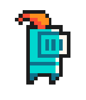

Bob ha sido despojado de su cuerpo terrenal, para poder recuperar las partes de su cuerpo y así poder volver a su estado natural debe adentrarse en la guarida donde han sido custodiadas las distintas partes de su cuerpo por terribles criaturas. Ayúdalo a derrotar a los enemigos que se interponen en su camino. ¿Podrés llegar hasta el final?
Juego inspirado en Nuclear Throne y Enter the gungeon, desarrollado en C++ usando la librería de gráficos SFML.